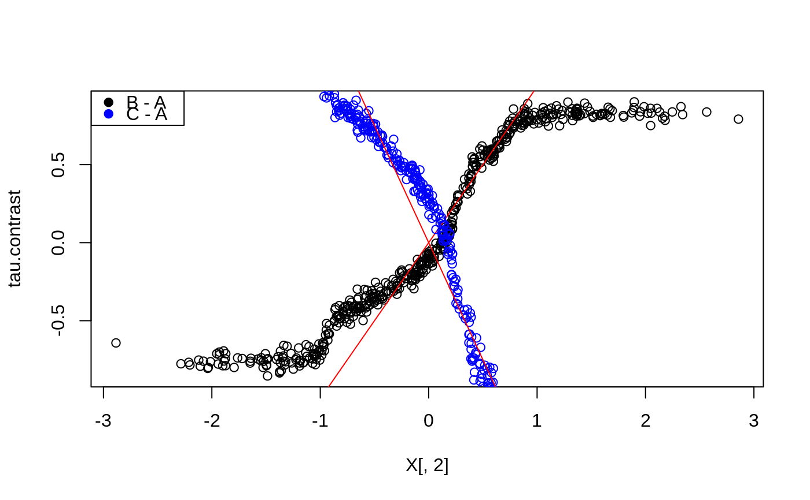

R/multi_arm_causal_forest.R
multi_arm_causal_forest.RdTrains a causal forest that can be used to estimate conditional average treatment effects tau_k(X). When the treatment assignment W is {1, ..., K} and unconfounded, we have tau_k(X) = E[Y(k) - Y(1) | X = x] where Y(k) and Y(1) are potential outcomes corresponding to the treatment state for arm k and the baseline arm 1.
multi_arm_causal_forest( X, Y, W, Y.hat = NULL, W.hat = NULL, num.trees = 2000, sample.weights = NULL, clusters = NULL, equalize.cluster.weights = FALSE, sample.fraction = 0.5, mtry = min(ceiling(sqrt(ncol(X)) + 20), ncol(X)), min.node.size = 5, honesty = TRUE, honesty.fraction = 0.5, honesty.prune.leaves = TRUE, alpha = 0.05, imbalance.penalty = 0, stabilize.splits = TRUE, ci.group.size = 2, compute.oob.predictions = TRUE, num.threads = NULL, seed = runif(1, 0, .Machine$integer.max) )
| X | The covariates used in the causal regression. |
|---|---|
| Y | The outcome (must be a numeric vector or matrix [one column per outcome] with no NAs). |
| W | The treatment assignment (must be a factor vector with no NAs). The reference treatment is set to the first treatment according to the ordinality of the factors, this can be changed with the `relevel` function in R. |
| Y.hat | Estimates of the expected responses E[Y | Xi], marginalizing over treatment. If Y.hat = NULL, these are estimated using a separate multi-task regression forest. Default is NULL. |
| W.hat | Matrix with estimates of the treatment propensities E[Wk | Xi]. If W.hat = NULL, these are estimated using a probability forest. |
| num.trees | Number of trees grown in the forest. Note: Getting accurate confidence intervals generally requires more trees than getting accurate predictions. Default is 2000. |
| sample.weights | Weights given to each sample in estimation. If NULL, each observation receives the same weight. Note: To avoid introducing confounding, weights should be independent of the potential outcomes given X. Default is NULL. |
| clusters | Vector of integers or factors specifying which cluster each observation corresponds to. Default is NULL (ignored). |
| equalize.cluster.weights | If FALSE, each unit is given the same weight (so that bigger clusters get more weight). If TRUE, each cluster is given equal weight in the forest. In this case, during training, each tree uses the same number of observations from each drawn cluster: If the smallest cluster has K units, then when we sample a cluster during training, we only give a random K elements of the cluster to the tree-growing procedure. When estimating average treatment effects, each observation is given weight 1/cluster size, so that the total weight of each cluster is the same. Note that, if this argument is FALSE, sample weights may also be directly adjusted via the sample.weights argument. If this argument is TRUE, sample.weights must be set to NULL. Default is FALSE. |
| sample.fraction | Fraction of the data used to build each tree. Note: If honesty = TRUE, these subsamples will further be cut by a factor of honesty.fraction. Default is 0.5. |
| mtry | Number of variables tried for each split. Default is \(\sqrt p + 20\) where p is the number of variables. |
| min.node.size | A target for the minimum number of observations in each tree leaf. Note that nodes with size smaller than min.node.size can occur, as in the original randomForest package. Default is 5. |
| honesty | Whether to use honest splitting (i.e., sub-sample splitting). Default is TRUE. For a detailed description of honesty, honesty.fraction, honesty.prune.leaves, and recommendations for parameter tuning, see the grf algorithm reference. |
| honesty.fraction | The fraction of data that will be used for determining splits if honesty = TRUE. Corresponds to set J1 in the notation of the paper. Default is 0.5 (i.e. half of the data is used for determining splits). |
| honesty.prune.leaves | If TRUE, prunes the estimation sample tree such that no leaves are empty. If FALSE, keep the same tree as determined in the splits sample (if an empty leave is encountered, that tree is skipped and does not contribute to the estimate). Setting this to FALSE may improve performance on small/marginally powered data, but requires more trees (note: tuning does not adjust the number of trees). Only applies if honesty is enabled. Default is TRUE. |
| alpha | A tuning parameter that controls the maximum imbalance of a split. Default is 0.05. |
| imbalance.penalty | A tuning parameter that controls how harshly imbalanced splits are penalized. Default is 0. |
| stabilize.splits | Whether or not the treatment should be taken into account when determining the imbalance of a split. It is an exact extension of the single-arm constraints (detailed in the causal forest algorithm reference) to multiple arms, where the constraints apply to each treatment arm independently. Default is TRUE. |
| ci.group.size | The forest will grow ci.group.size trees on each subsample. In order to provide confidence intervals, ci.group.size must be at least 2. Default is 2. (Confidence intervals are currently only supported for univariate outcomes Y). |
| compute.oob.predictions | Whether OOB predictions on training set should be precomputed. Default is TRUE. |
| num.threads | Number of threads used in training. By default, the number of threads is set to the maximum hardware concurrency. |
| seed | The seed of the C++ random number generator. |
A trained multi arm causal forest object.
This forest fits a multi-arm treatment estimate following the multivariate extension of the "R-learner" suggested in Nie and Wager (2021), with kernel weights derived by the GRF algortim (Athey, Tibshirani, and Wager, 2019). In particular, with K arms, and W encoded as {0, 1}^(K-1), we estimate, for a target sample x, and a chosen baseline arm:
\(\hat \tau(x) = argmin_{\tau} \left\{ \sum_{i=1}^{n} \alpha_i (x) \left( Y_i - \hat m^{(-i)}(X_i) - c(x) - \left\langle W_i - \hat e^{(-i)}(X_i), \, \tau(X_i) \right\rangle \right)^2 \right\}\),
where the angle brackets indicates an inner product, e(X) = E[W | X = x] is a (vector valued) generalized propensity score, and m(x) = E[Y | X = x]. The forest weights alpha(x) are derived from a generalized random forest splitting on the vector-valued gradient of tau(x). (The intercept c(x) is a nuisance parameter not directly estimated). By default, e(X) and m(X) are estimated using two separate random forests, a probability forest and regression forest respectively (optionally provided through the arguments W.hat and Y.hat). The k-th element of tau(x) measures the conditional average treatment effect of the k-th treatment arm at X = x for k = 1, ..., K-1. The treatment effect for multiple outcomes can be estimated jointly (i.e. Y can be vector-valued) - in which case the splitting rule takes into account all outcomes simultaneously (specifically, we concatenate the gradient vector for each outcome).
For a single treatment, this forest is equivalent to a causal forest, however, they may produce different results due to differences in numerics.
Athey, Susan, Julie Tibshirani, and Stefan Wager. "Generalized Random Forests". Annals of Statistics, 47(2), 2019.
Nie, Xinkun, and Stefan Wager. "Quasi-Oracle Estimation of Heterogeneous Treatment Effects". Biometrika, 108(2), 2021.
# \donttest{ # Train a multi arm causal forest. n <- 500 p <- 10 X <- matrix(rnorm(n * p), n, p) W <- as.factor(sample(c("A", "B", "C"), n, replace = TRUE)) Y <- X[, 1] + X[, 2] * (W == "B") - 1.5 * X[, 2] * (W == "C") + rnorm(n) mc.forest <- multi_arm_causal_forest(X, Y, W) # Predict contrasts (out-of-bag) using the forest. # By default, the first ordinal treatment is used as baseline ("A" in this example), # giving two contrasts tau_B = Y(B) - Y(A), tau_C = Y(C) - Y(A) mc.pred <- predict(mc.forest) # Fitting several outcomes jointly is supported, and the returned prediction array has # dimension [num.samples, num.contrasts, num.outcomes]. Since num.outcomes is one in # this example, we can `drop()` this singleton dimension using the `[,,]` shorthand. tau.hat <- mc.pred$predictions[,,] plot(X[, 2], tau.hat[, "B - A"], ylab = "tau.contrast")# The average treatment effect of the arms with "A" as baseline. average_treatment_effect(mc.forest)#> estimate std.err contrast outcome #> B - A 0.02875015 0.1197462 B - A Y.1 #> C - A -0.14652013 0.1355830 C - A Y.1# The conditional response surfaces mu_k(X) for a single outcome can be reconstructed from # the contrasts tau_k(x), the treatment propensities e_k(x), and the conditional mean m(x). # Given treatment "A" as baseline we have: # m(x) := E[Y | X] = E[Y(A) | X] + E[W_B (Y(B) - Y(A))] + E[W_C (Y(C) - Y(A))] # which given unconfoundedness is equal to: # m(x) = mu(A, x) + e_B(x) tau_B(X) + e_C(x) tau_C(x) # Rearranging and plugging in the above expressions, we obtain the following estimates # * mu(A, x) = m(x) - e_B(x) tau_B(x) - e_C(x) tau_C(x) # * mu(B, x) = m(x) + (1 - e_B(x)) tau_B(x) - e_C(x) tau_C(x) # * mu(C, x) = m(x) - e_B(x) tau_B(x) + (1 - e_C(x)) tau_C(x) Y.hat <- mc.forest$Y.hat W.hat <- mc.forest$W.hat muA <- Y.hat - W.hat[, "B"] * tau.hat[, "B - A"] - W.hat[, "C"] * tau.hat[, "C - A"] muB <- Y.hat + (1 - W.hat[, "B"]) * tau.hat[, "B - A"] - W.hat[, "C"] * tau.hat[, "C - A"] muC <- Y.hat - W.hat[, "B"] * tau.hat[, "B - A"] + (1 - W.hat[, "C"]) * tau.hat[, "C - A"] # These can also be obtained with some array manipulations. # (the first column is always the baseline arm) Y.hat.baseline <- Y.hat - rowSums(W.hat[, -1, drop = FALSE] * tau.hat) mu.hat.matrix <- cbind(Y.hat.baseline, c(Y.hat.baseline) + tau.hat) colnames(mu.hat.matrix) <- levels(W) head(mu.hat.matrix)#> A B C #> [1,] 0.33408792 0.1160133 0.7284166 #> [2,] -0.31983419 0.5215760 -2.1683454 #> [3,] 1.06521425 0.9907741 1.3449928 #> [4,] 0.05363935 -0.7165410 1.1511353 #> [5,] -1.07160385 -1.8710761 0.1156056 #> [6,] -1.26389423 -1.6890332 -0.3890184# The reference level for contrast prediction can be changed with `relevel`. # Fit and predict with treatment B as baseline: W <- relevel(W, ref = "B") mc.forest.B <- multi_arm_causal_forest(X, Y, W) # }